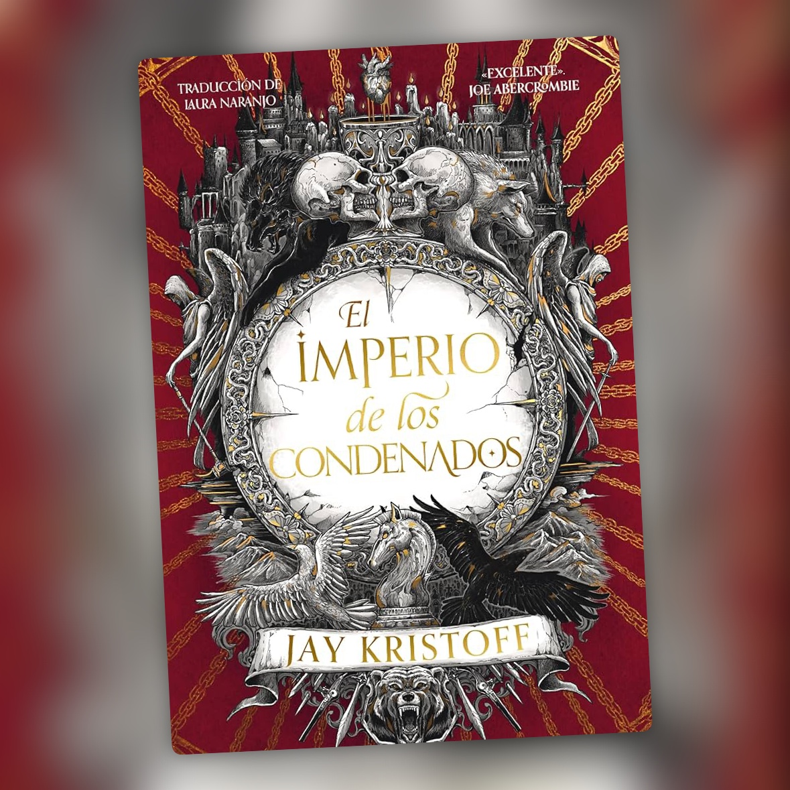

El Imperio de los Condenados
Más sangre, más fe hecha pedazos, y una trilogía que va a más

Las segundas partes de una trilogía suelen ser el tramo raro. Ya se ha contado lo importante, el mundo está montado y muchas veces el libro se limita a tirar de inercia hasta el cierre. Aquí no pasa eso, y se nota casi desde la primera página.
Jay Kristoff mete más de todo: más aventuras, más peleas, más batallas, más épica y, sobre todo, mucha más sangre. Pero no da la sensación de que lo haga simplemente para subir la apuesta respecto al primer libro. La historia sigue avanzando y todo lo que ocurre tiene su sitio, ya sea dentro del conflicto o en la historia de Gabriel de León.
Y eso tiene bastante mérito teniendo en cuenta que estamos hablando de un libro de casi mil páginas. El ritmo se mantiene durante prácticamente toda la novela y no he tenido esa sensación de que la historia se esté alargando para llegar al siguiente momento importante. Para un libro de este tamaño, ya es bastante.
La saga sigue contada a través de Gabriel, el último Santo de Sangre, que narra su historia desde el cautiverio a su captor mientras el relato va saltando entre distintos momentos de su pasado. Es una estructura que ya funcionaba en El Imperio del Vampiro y aquí sigue haciéndolo. A estas alturas conocemos mucho mejor a Gabriel y esos saltos por su historia tienen incluso más peso porque ya sabemos quién es y todo lo que ha ido dejando atrás.
En general, creo que el libro incluso supera al primero. La narración sigue siendo brutal y poética a la vez, algo que no es fácil de sostener durante tantas páginas. Kristoff consigue mantener esa mezcla de oscuridad, violencia y momentos más emocionales sin que el tono se resienta.
Gabriel sigue moviéndose entre la fe y el abismo, y esta vez la historia lo empuja bastante más hacia el segundo. Verlo debatirse entre esas dos cosas es una de las partes que más me han gustado. No tiene claro en qué cree ni hasta dónde está dispuesto a llegar, y esa duda está muy presente durante toda la historia.
También hay una sensación de que todo se va haciendo más grande. Las batallas, el conflicto, las pérdidas y, sobre todo, lo que le ocurre a Gabriel. El primer libro ya dejaba muchas cosas abiertas, pero aquí Kristoff lleva varias de ellas bastante más lejos y consigue que la historia tenga una carga emocional mayor.
La trilogía vampírica de Kristoff avanza con paso firme. Poderosa, sangrienta y hermosa, las tres cosas a la vez. Me ha gustado incluso más que El Imperio del Vampiro, que ya me había gustado mucho. Ahora solo queda esperar al cierre de la trilogía y confiar en que esté a la altura de lo que ha ido construyendo hasta aquí.
Ficha técnica
- Título original: Empire of the Damned
- Autor: Jay Kristoff
- Saga: El Imperio del Vampiro (libro 2 de 3)
- Traducción: Laura Naranjo
- Editorial: Nocturna Ediciones
- Páginas: 920
- Año de publicación: 2025